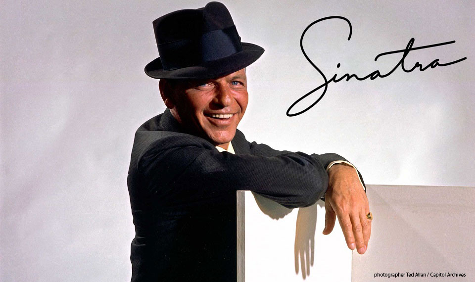

Paragraph
Pensava sempre ai testi. La melodia veniva in secondo luogo... La sua sensibilità per le parole è semplicemente bellissima.
- 1915 Nasce il 12 dicembre 1915, ad Hoboken, da padre siciliano e madre ligure. Il padre, ex pugile, è capitano dei vigili del fuoco. La madre gestisce un piccolo negozio e fa attività politica per il Partito Democratico.
- 1930 A 15 anni Frank si eseibisce per la prima volta in pubblico, durante un'esibizione scolastica del liceo A. J. Demarest High School. Ma preso dalla passione per la musica trascura gli studi e viene espulso dalla scuola. Comincia a lavorare prima in una libreria e poi come operaio portuale.
- 1931 Comincia a cantare in vari piccoli locali del New Jersey come "saloon singer".
- 1935 Fonda il suo primo gruppo, gli Hoboken Four, con cui vince un concorso per giovani talenti emergenti (Radio Major Bowes' Amateur Hour).
- 1938 Viene assunto come intrattenitore ufficiale al Rustic Cabin, un saloon che trasmetteva spettacoli dal vivo. Nel novembre dello stesso anno viene arrestato e trattenuto per diversi giorni con l'accusa di molestie nei confronto di una ragazza. Quella ragazza, Nancy Barbato, diventerà la sua prima moglie.
- 1939 Registra assieme all'orchestra di Harry James i pezzi Ciribiribin e All or Nothing at All.
- 1940 Si unisce all'orchestra di Tommy Dorsey. Il loro singolo I'll Never Smile Again raggiunge la prima posizione negli Stati Uniti per 12 settimane.
- 1941 Durante la seconda guerra mondiale lavora per l'esercito statunitense come intrattenitore per le truppe.
- 1943 Dopo aver siglato un contratto con la Columbia Records, tra il 1943 e il 1944 entra per ben 23 volte nella top ten delle classifiche americane. Frank Sinatra inizia a essere considerato il più grande cantante statunitense dopo Bing Crosby
Puoi continuare a leggere la vita di Frank sulla sua pagina di Wikipedia